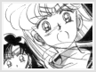
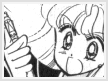
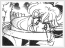

Entity » The Warrior» Senshi of love and beauty Technically, Sailor Venus is the first senshi to be discovered, instead of Sailor Moon. She is devotedly attached to her role as a senshi, as shown numerous times throughout the series. An episode in SailorMoon S is a small example. As she tells Asai-kun that she had to put volleyball aside for more important things, she realizes that she couldn't be a normal teenager as long as she is a senshi. However, she's ok with that. One may say she is the true leader of the inner senshi, since Tsukino Usagi/Sailor Moon is the moon princess. She has proven her leadership by leading the inners and giving instructions whenever Sailor Moon fails to do so. roles as a senshi As a senshi, she is entirely willing to sacrifice herself for the moon princess. Time after time, she risked her own life to save Sailor Moon, not only because of her duty as a protector, but also as a friend. She did eventually give up her life by protecting the princess. Even with the prince and the princess dead, she overcame her grievance, continued on and led the inner senshi by trying to attack Metallia by using their powers. henshins & attacks As Sailor Venus and Super Sailor Venus, she controls light. However, some of her attacks are metal based and/or love based. Her most basic attack is 'Crescent Beam,' which incidentally is her fastest attack. She joins two crescent moons together in the air and directs the beam using her finger at her target. This attack eventually upgraded into 'Crescent Beam Shower,' which was only used once in the entire series. She directs her beam into the sky, where it splits into many beams as it rains down from the sky. Naturally, this attack is most effective against many enemies at once. Her main attack in the second season of the anime series is 'Venus Love Me Chain.' In this attack, she whips a golden chain of hearts at her target, either damaging it or trapping it. This attack has come in handy quite a few times throughout the series, for she can use it to catch herself or others if she is falling. Her final attack, Venus Love and Beauty Shock, is her strongest one. This attack is only used by Super Sailor Venus, in which she blows a kiss of a heart and throws it at her target. The heart transforms into a trail of heart shaped lasers and shocks or damages her target. |